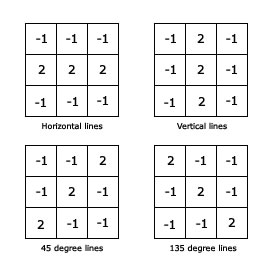
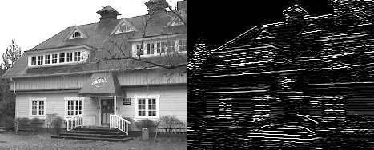
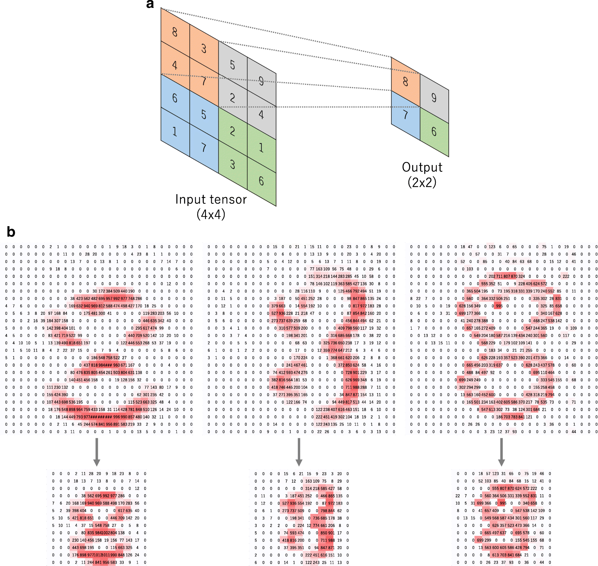

Contents for this Chapter are borrowed from EVA(Extensive Vision AI) course by TheSchoolOfAI. For more info, visit The School of AI
Learn
Research
Compete
Repeat
CHAPTER-2
Neural Architecture
Let's re-look at some of the important concepts we covered in the last session.
Concepts From Session 1

Here we see a 3x3 kernel convolving on an image/channel of size 4x4.
Every purple pixel we see represents a value, so in total, we are looking at 16 values. These values are generated from the image on which we are convolving, so we have no control over them.
The dark purple 3x3 moving box is our kernel. We initialize it (and all other kernels) randomly. We do have control over the values in the kernel, and that is what we want we (backpropagation) would be changing, such that they become the feature extractor (like a vertical edge detector).
Whenever our kernel is stopping, we are looking at 9 multiplications, we then sum all these 9 values, and pass the sum to the green channel. This green channel is called an output channel.
Whenever we perform a convolution with 3x3 kernel on an image of 4x4 in size, the output channel would have a resolution of 2x2. We essentially lose 2 pixels in x as well as the y-axis.
Convolving a 3x3 channel on 5x5

Similarly, if we convolve a 3x3 kernel on a 5x5 image, the output channel we would create will have a resolution of 3x3. This is true only in the case when:
- we are not using any padding (we are not adding additional 0s (what else can we add?) on the boundaries of our input image, changing its resolution, say from 5x5 to 7x7), and
- we are not using a stride of more than 1.
In the images above, you see, that whenever the kernel moves, it skips just 1 pixel. If it were to skip 2 pixels, that would be called a stride of 2.
Why do we add layers?
We add layers in a DNN for multiple reasons:
- we have an objective (say detecting an object), and we can do that easily if we could detect the parts of the objects. Parts of the objects can be built from some patterns, and these patterns in-turn can be made from textures. To make any kind of texture, we would need edges and gradients. We add layers to procedurally do exactly this. We expect that our first layers would be able to extract simple features like edges and gradients. Next layers would then build slightly complex features like textures, and the patterns. Then later layers could build parts of objects, which can then be combined into objects. This can be seen in the image above.
- we progressively add layers, the receptive field of the network slowly increases. If we are using 3x3 kernels, then each pixel in the second layers has only "seen" (receptive field) 3x3 pixels. Before the network can take any decision, the whole image needs to be processed. We add layers to achieve this. Also, consider the fact that required or important edges and gradients can be made or seen within 11x11 pixels in an image of 400x400. But say, we were looking at a face, the parts of the face would take much more area (or the number of pixels).
Receptive Field

Here we see our first layer as a 5x5 image. We are convolving this 5x5 image with a kernel of size 3x3, and hence the resulting output resolution will be a channel with 3x3 pixels/values. When we convolve on this 3x3 channel with a kernel of size 3x3, we will get only 1 output. We have added 2 layers here.
To get the final output of 1 or 1x1, we could have used a 5x5 kernel directly. This means that using a 3x3 kernel twice is equivalent to using a 5x5 kernel. This also means that two layers of 3x3 have a resulting receptive field of 5x5.
As we have discussed in the class, we want the final global receptive field (at the final prediction layer or output layer) to be equal to the size of the image. This is important as the network needs to "see" the whole image before it can predict exactly what the image is all about.
This would mean that we need to add as many layers are required to reach the final receptive field equal to the size of the object. Since we have decided to consider the size of the object to be equal to the size of the image (for first few sessions), our final receptive field is going to be the size of the image. (We know this is not true, images can have objects of any size, but we need to consider this restriction to build our concepts. Later we would work on what needs to be done to remove this restriction).
The Convolution Mathematics

We can see above that our 3x3 kernel has these values:
0 1 2
2 2 0
0 1 2
Whenever our kernel is stopping on a 3x3 area, we are looking at 9 multiplications and the sum of the resulting 9 multiplications being passed on to the output (green) channel as shown in the image above.
The values in the output channel can be considered as the "confidence" of finding a particular feature. Higher the value, higher the confidence, and lower (or more negative) the value, "higher" the confidence of the non-existence of the feature.
Some examples of edge detectors would be:

When we use the horizontal edge detector kernel with the values, as shown above, we get the following result:

Let's look at this through some numbers. Let us look at how a vertical edge would look like in an image:
0.2 0.2 0.9 0.2 0.5
0.1 0.1 0.9 0.3 0.2
0.0 0.2 0.8 0.1 0.1
0.2 0.3 0.9 0.1 0.2
0.1 0.1 0.9 0.3 0.2
The values shown in bold represents a vertical line in this image
Let us define our vertical kernel as:
-1 2 -1
-1 2 -1
-1 2 -1
After convolving the values we get are:
-2.0 4.3 -2.3
-1.7 4.1 -2.1
-1.7 4.1 -2.1
We can clearly see in this example that the central vertical values in the 3x3 output layer above, the detection of the vertical line. Not only we have detected the vertical line, we are also passing on an image/channel which shows a vertical line.
Spend a few moments to think about this bold line.
How many layers would we need to move from 400x400 image to 1x1?
As we saw in the last lecture, we need to add around 200 layers (as we add each layer we reduce the size of the image/channel by 2, so 400/2 = 200, gives us the number of layers we need to add).
Now, these are an insanely large number of layers. We can do much better than this.
MaxPooling
As we learned in the last lecture, we can use something called MaxPooling to solve this, as shown in the image below:

We saw this image and discussed that we rarely (rather never) use MaxPooling with 3x3, but rather use 2x2.

MaxPooling adds a bit of:
Shift Invariance
Rotational Invariance
Scale Invariance
How many layers would we need now?
400 | 398 | 396 | 394 | 392 | 390 | MP (2x2)
195 | 193 | 191 | 189 | 187 | 185 | MP (2x2)
92 | 90 | 88 | 86 | 84 | 82 | MP (2x2)
41 | 39 | 37 | 35 | 33 | 31 | MP (2x2)
15 | 13 | 11| 9 | 7 | 5 | 3 | 1
By using MaxPooling we have reduced the layer count from 200 to 27. That's much better.
How many kernels did we add in the first layer?
How many kernels are required?
We would need a set of edges and gradients to be detected to be able to represent the whole image. Through experiments, we have learned that we should use around 32 or 64 kernels in the first layer, increasing the number of kernels slowly. Let's us assume we add 32 kernels in the first layer, 64 in second, 128 in thrid and so on.
Our Network would look something like this:
400x400 | (3x3)x32 | 398x398x32
398x398 | (3x3)x64 | 396x396x64
...
One need to observe here that the input to the second layer is not 398x398 but 398x398x32, as we added 32 kernels. Each kernel would create its own channel.
3x3 is misleading!
What we meant here is that unless we write the total channels in the 3x3 kernels, we are not representing it properly. We should write our kernel as 3x3x1. If we were to re-write our network above again, it should be:
400x400x1 | (3x3x1)x32 | 398x398x32
398x398x32 | (3x3x32)x64 | 396x396x64
...
Notice that our kernels in the second layer have 32 channels.
Our kernels must have an equal number of channels as in the input channel. Since input has 32 channels in the second layer, our kernel will have 32 channels. Each channel in the kernel (say channel # 23) will look only at 1 channel (channel number 23 in the input).
Let's look at this animation:

In this animation, you can see that each kernel has 3 channels. Three channels are required as the input (5x5) has three channels. We are using 4 kernels here, that means we would have 4 channels in the output. Hence the output is 3x3x4.
If we have an infinite number of channels in the input, our kernels must have infinite channels. This has nothing to do with the number of channels in the output. Output channels are equal to the number of kernels we use.
Multi Channel Convolution
Look at this image below, now you can understand how multi-channels are handled. (Please note that the bias is obsolete, and not used/focused on anymore)

Let's build a network again!
We are adding an increasing number of kernels as generally required:
400x400x1 | (3x3)x32 | 398x398x32
398x398x32 | (3x3)x64 | 396x396x64
396x396x64 | (3x3)x128 | 394x394x128
394x394x128 | (3x3)x256 | 392x392x256
392x392x256 | (3x3)x512 | 390x390x512
MaxPooling
195x195x512...
We have a problem here. Even though till now we have used 32+64+128+256+512 kernels (which is a small number), we right now have 992 images in our Memory. We solved the issue of large channel size by using MaxPooling, but we need to figure out a way to reduce these number of the channel while making sure, that, we are not defeating the purpose of increasing the number of channels (something we desperately want).
That's the topic of 3rd session!
Assignment 2:
- Open this link: COLABLINK
- Duplicate this file to your Collaboratory
-
Then:
- read the file carefully
- add comments to all the cells carefully, explaining exactly what that cell does (for your own good)!
-
in the cell where the main model is defined:
- write receptive field of each layer as a comment
- write the input channel dimensions
- run each cell one by one
- experiment
- Once you are done with your experiments, attempt ch02 Quiz. You will have 45 minutes to answer questions about this code. You will also be running the code once/twice within this 45 minutes.
- Read the ch02 Quiz carefully before attempting it.
- You have actual quiz called Q2 as well.
- Fixed deadlines unless WW3 starts.